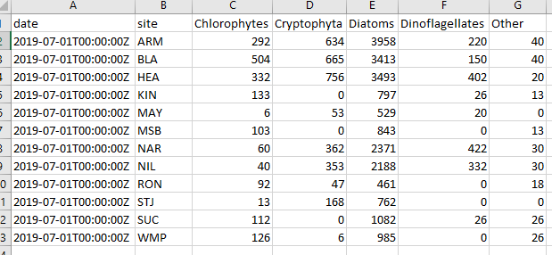
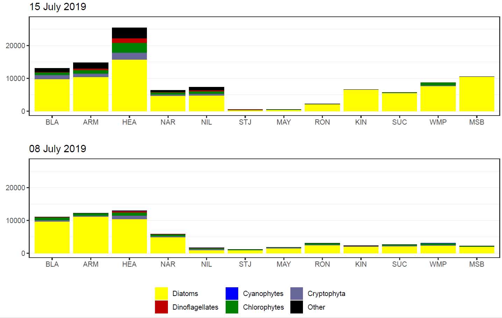
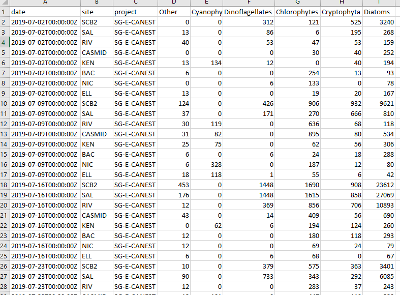

Introduction
These functions have been created to aid in visualising phytoplankton counts in the Canning and Swan estuaries. There is a two stage process with details below.
Stage One - Create summary data
Phytoplankton count data in its raw form (hereafter called raw data) provides count and other information for a multitude of species. This data is analysed and provided to us by the Department of Water and Environmental Regulation’s Phytoplankton Ecology unit. In order to visualise the data it benefits from some summarising into larger groupings. This first stage undertakes this process and outputs summaries that are used in stage two.
After loading the rivRmon package, two file paths are
provided to the phyto_groupR() function. A file path to the
raw data xlsx spreadsheets and a file path to the desired location of
the exported summary data. This summary data will be written to a
summaries/ directory and if it doesn’t already exist it
will be created.
#load the package
library(rivRmon)
#run the phyto_groupR function
phyto_groupR(pathin = "C:/path/to/raw_data", pathout = "C:/path/for_export")The only thing to be careful of is ensuring that if you are copying a fiile path from a Windows OS you will need to double all the backslashes for the path to be recognised. The above example is the alternative method where the backslashes are converted to a single forward slash. An example of an exported summary csv is below.

Stage Two - Creating the barcharts and running sheet
This next stage reads in all the summary data csv’s and based on date provided, generates two barcharts, arranged vertically, in the one output. The top barchart is for the date provided and the bottom barchart is for the prior sample. As sampling of the estuaries occurs on different days, the choice of date will only plot data for a single estuary. In other words it won’t get confused when summary csv’s exist for both estuaries.
The input for the phyto_plotR() function is a file path
to the location of the summaries/ directory not the summary
csv’s themselves. This is essentially the pathout
parameter that you specified when running phyto_groupR().
The barcharts (as pdf) will be exported here along with a “running
datasheet”.
The running datasheet is a csv that is exported with all the summary data up to and including the date provided for that estuary. To run the function.
#run the phyto_plotR function
phyto_plotR(summary = "C:/path/for_export", date = "20190715")Only two things to watch out for here. Again ensure that you have handled the character filepath correctly. Also provide the date as a character string in the format “yyyymmdd”. It can be presented as above in the code snippet or contain separators (e.g. “2019/07/15” or “2019-07-15”).
An example of a barchart follows. This one is for the Swan estuary (identified by its name and the sites present). The date provided is that in the code snippet above and is used in creating the top barchart. The function finds the summary data for the prior sampling effort and uses that to plot the bottom barchart.

Lastly an example of a portion of a running datasheet.
